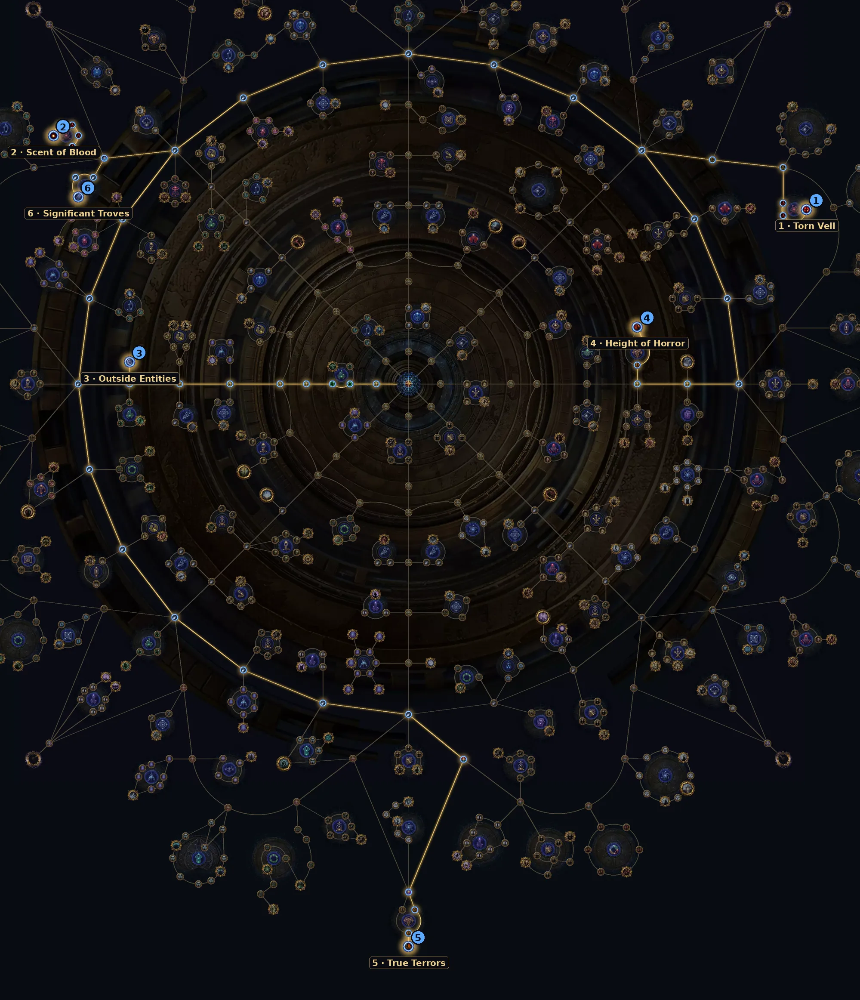

Os monstros que morrem abrem portais de onde saem demônios. Na 3.30 é ótimo: cada demônio raro ou unique solta a currency boa, e os uniques abrem vários portais.
| Item | Como usar |
|---|---|
| Mod de mapa | Mapas raros podem ter o sufixo novo "Area contains an Evocator of Beidat / K'Tash / Ghorr". Prefira esses mapas. |
| Junto com | Legion, Breach ou Delirium: mais monstros mortos = mais portais. |
| Memory Altars | A 3.30 adicionou mods de Memory Altar para Beyond. |
| Atlas | Na 3.30 o Beyond é mecânica terciária: os nós do Atlas só aumentam a chance de ele aparecer. |
Árvore oficial da 3.30 (a GGG publicou antes da liga). Caminho a partir do centro: 30 pontos para os essenciais e +22 para os extras. A árvore tem 150 pontos no total. Some com a base de sustento (36 pontos).
| Nó | O que faz |
|---|---|
| 1 Torn Veil Essencial | +50% de chance de Demonic Evocator (Beyond). |
| 2 Scent of Blood Essencial | +60% de chance de Demonic Evocator (Beyond). |
| 3 Outside Entities Essencial | Escolha a mecânica terciária: Viridian Wildwood (Ritual), Demonic Evocator (Beyond), Delirium, Mirage ou Buried Sentinel. |
| 4 Height of Horror Extra | Uniques ganham 1 mod e dão +50% de experiência. |
| 5 True Terrors Extra | Uniques ganham 2 mods (mais loot, mais perigo). |
| 6 Significant Troves Extra | Uniques com +200% de chance de soltar Threads. |
Abrir no site oficial (árvore do Atlas)
Nós de escolha (Thread, exército, líder etc.) aparecem marcados no link; escolha a opção indicada na tabela ao clicar neles.

Precisa de clear muito rápido e de defesa razoável: os demônios do Beyond batem forte.
Do site: Trickster Spark, RF Chieftain, Toxic Rain.
Ver vídeos da 3.30 no YouTube
Busca pronta pela 3.30. A árvore do Atlas saiu antes da liga; os vídeos de farm da 3.30 começam a aparecer a partir do lançamento (13/11).